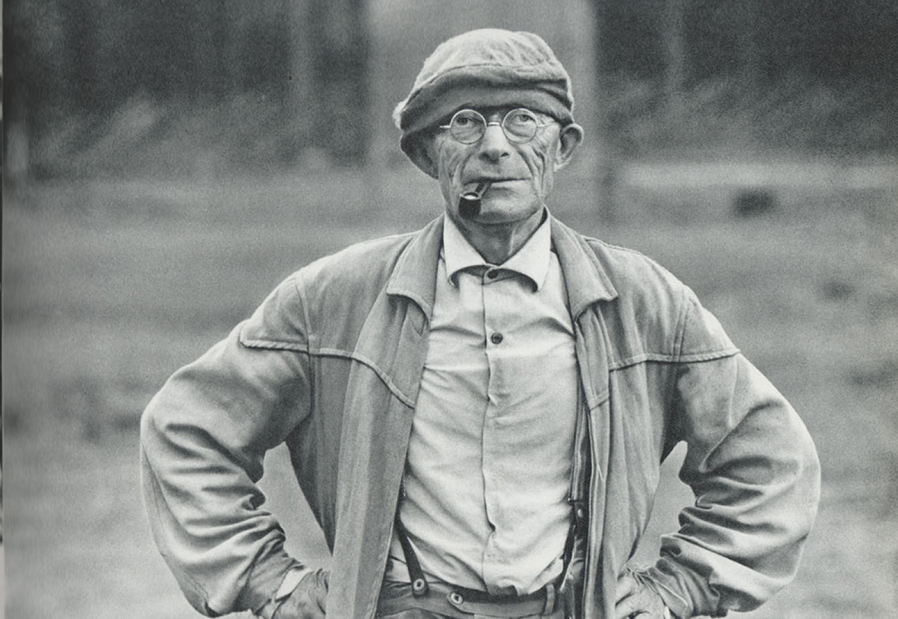

Herman Hesse (1877-1962) fue un novelista, poeta y pintor alemán, nacionalizado suizo en 1923. Es conocido por sus obras literarias que exploran temas de autodescubrimiento, espiritualidad y la dualidad del ser humano. Entre sus obras más destacadas se encuentran Demian, Siddhartha, El lobo estepario y El juego de los abalorios.
En 1946, Hesse recibió el Premio Nobel de Literatura por su obra completa, que se caracteriza por la riqueza de sus ideas y la profundidad de sus reflexiones sobre la condición humana.
"Quien quiera nacer, tiene que destruir un mundo." - Herman Hesse, Demian
